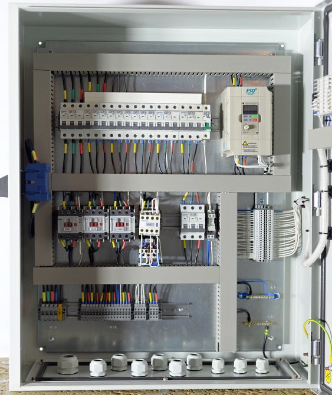

Introduction
VFDs are essential components in controlling the frequency and voltage of an electric motor's power source, enabling speed adjustment and soft starting or stopping of the motor.
Components of a VFD
- Rectifier
- DC bus
- Inverter
- PWM controller
- Filter
Benefits of VFDs
- Energy efficiency
- Reduced starting current
- Overload protection, voltage spike protection, and thermal protection
Selecting the Right VFD
When selecting the right VFD for a specific application, considerations include motor power rating, voltage tolerance, and NEMA MG1 standards for motor design.

VFD Sizing
In VFD sizing, the main considerations are the VFD's continuous current, which should be higher than the motor's maximum load current, and the intermittent current, which should be 115% greater than the motor current rating for variable torque applications and 150-200% for constant torque applications.
Looking for VFD design, quotation, installation, training, and consultation services? Look no further than Stanley Kr. Our expert team provides tailored solutions, from motor power rating analysis to system integration and maintenance. With our comprehensive training and support, you can maximize your VFD investment. Contact us today to learn more.